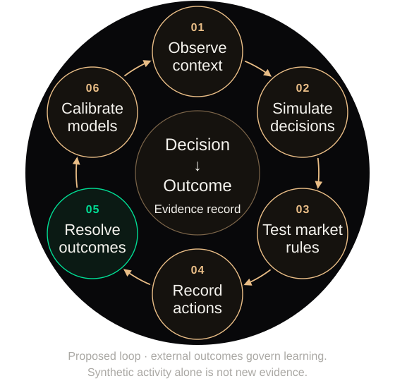
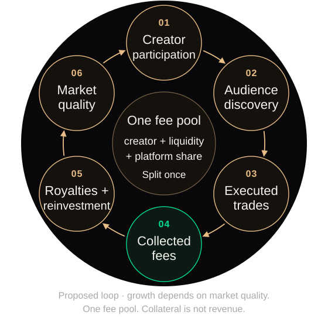

01→
Capture events
Provider APIs, permitted feeds and webhooks; polling where streams are unavailable.
source ID · published_at
observed_at · content hashTrack the signals.
Simulate the participants.
Test the market rules.
A creator is a tracked entity, like a ticker in a quant research system. Backer’s architecture connects social events, time-stamped features, simulated trading and externally resolved contracts.
One profile ID joins source events → forecasts → orders → independently resolved outcomes.
A quant system maps news and transactions to a security identifier. Backer maps posts, videos, comments and audience counters to a canonical creator ID, then measures how that creator’s attention and sentiment change through time.
Provider APIs, permitted feeds and webhooks; polling where streams are unavailable.
source ID · published_at
observed_at · content hashMap account IDs and reviewed aliases to a creator. Keep ambiguous names unlinked.
platform identity
→ canonical creator_idDeduplicate reposts, preserve edits, quarantine suspect activity and record provenance.
idempotent event key
late-event + retry queueAttention velocity, acceleration, source breadth, target-specific sentiment and concentration.
1h / 24h / 7d windows
source-normalized featuresFeatures update agent information sets and forecast inputs. Freeze a snapshot before replay.
feature_version · as_of
forecast + scenario inputsPer-source quotas and adaptive polling → durable queues → backoff + replay → freshness checks. A stale source stays flagged; it never becomes a zero observation.
zₜ = (mentionsₜ − μcreator,source,hour) / (σpast + ε)Separate a burst from the creator’s normal posting cycle; test an attention-shock scenario.
vₜ = Δ log(1 + audience) / Δt
aₜ = Δvₜ / ΔtDistinguish large existing reach from accelerating growth; condition milestone forecasts.
sₜ = Σ wⱼ[Pⱼ(positive) − Pⱼ(negative)] / Σ wⱼMeasure language about this creator. Keep polarity separate from expected growth and trading intent.
breadth = distinct active sources
HHI = Σ (author mention share)²Distinguish diffusion across independent sources from a concentrated campaign or repeated reposts.
120 deduplicated mentions in one hour, against a comparable historical mean of 60 and standard deviation of 20, gives z = 3. Spread across three monitored platforms is different from 120 reposts by one account cluster.
The experiment increases exposure only for relevant cohorts, preserves differing beliefs, and measures the resulting fills and price movement. It does not convert a positive sentiment score directly into a winning-contract prediction.
Implemented foundation: provider adapters, source-dated content and metrics, reviewed identity-link records, record deduplication, refresh state and last-good caches.
Next engineering layer: an always-on scheduler, rolling feature store, evaluated sentiment model and activity-quality filters. Continuous coverage and predictive validity require live verification.
Store publication time and the time Backer first observed an event. A backtest may use a record only when observed_at ≤ forecast_cutoff. Later edits, delayed counts and resolution labels cannot enter an earlier forecast.
Compare each creator and source with its own trailing baseline and time-of-day pattern. Cap duplicate amplification. Quality weights must be measured and documented; a sentiment score is not a truth score. Insufficient samples return “unknown.”
Compare public-signal-only, market-price-only and combined forecasts on the same future events. Use Brier score and reliability by cohort; retain a model only when it improves held-out performance with uncertainty reported.
Feature equations specify the target design; weights, windows and thresholds require validation. Cross-platform identity does not imply access to private accounts or unrestricted platform data.

Time-stamped content, audience signals, market state.
Interests, attention budget, risk preference, cash and positions.
Synthetic profiles today.
Consented behavioral grounding is the next validation layer.
Experience returns to memory. Finite resources make decisions costly.
50-agent cognition rooms with memory, planning and paired scenarios. A separate 5,000-profile synthetic laboratory models price-time order matching and fee-sensitive policies.
Prototype evidenceSame population. Same random seed. One design change.
A reference run with heterogeneous beliefs and funded buyers and sellers.
This compact illustration runs locally. Its outputs demonstrate mechanisms, not forecast accuracy or expected returns.
Conserve collateral and inventory. Test fees, partial fills, liquidity withdrawal and concentration.
Compare held-out behavior, alternative agent policies and repeated seeds. Preserve disagreement.
Lock forecasts before outcomes. Measure Brier score and calibration on future, unseen cohorts.
Score memories by recency, importance and semantic relevance. Reflection compresses experience into beliefs; planning converts beliefs into actions under resource constraints.
R(m) = wᵣ recency + wᵢ importance + wₛ relevanceFor each seed, replay the same population under control and treatment. The paired difference isolates the modeled rule change. Repeat across seeds and agent assumptions.
Δₛ = metric(treatment, s) − metric(control, s)Use time-separated and creator-disjoint holdouts. Compare against simple baselines. Score only externally observed outcomes; abstain when data or cohort coverage is insufficient.
Brier = mean[(pᵢ − yᵢ)²], yᵢ ∈ {0,1}Agent simulations test conditional hypotheses. A simulated intervention is not a measured real-world causal effect. Market prices remain sensitive to liquidity, risk and selection.
Investors express a view on a milestone, a relative outcome or a continuing trajectory. The target business earns execution fees; participating profiles can share in collected fees.
Built: simulation and trading prototypes. Next: an opted-in forecasting pilot. Target: fee-generating execution and creator royalties.
A metric, threshold, deadline and resolution source are fixed before the first order. YES pays $1 if the condition resolves true; otherwise $0.
Sell into available liquidity at a higher price, or hold a correct view to settlement. A losing view loses the entry cost plus fees.
A contracted share of collected trading fees. Creator earnings are separate from who wins the contract.
Retain trading fees after creator royalties and liquidity incentives. Rates are a product-design variable.
Identity, metric, deadline, source and dispute rules.
contract_idAvailable balance, exposure limits, eligibility, self-trade controls.
reserved_balancePrice-time priority, partial fills, cancel/replace, explicit fees.
order → fillAtomic positions, cash movements, fees and creator accruals.
append-only ledgerExternal evidence, dispute window, final result and redemption.
outcome → payoutThe simulator informs product design. A precommitted external metric determines the payout, with fallback and void rules for missing or disputed data.
Evidence → challenge → finalityBinary contracts transfer funded value between participants. Trading fees pay the platform and any agreed creator or liquidity share.
Capital appreciation and settlement are alternative exits from the same position. Royalties are an allocation of fees, never an extra settlement claim.
Assumption: 1% fee on each executed trade’s consideration; no redemption fee. This is an accounting illustration, not a published fee schedule.
Each complete YES/NO pair is backed by $1. Trades transfer claims; fees are separate cash entries. A matched fill and its position, balance and fee updates must commit atomically.
P&L = exit value − entry cost − trading feesA consenting profile receives a pre-agreed fee share; a PK market can allocate that share between both profiles. Block creator and affiliate trading in their own outcomes. Verify identity and detect wash activity.
royalty = eligible collected fees × agreed shareContinuous exposure requires a robust index, margin, funding, liquidation and loss-absorption rules. Funding links the traded price to the index and transfers between longs and shorts; it is not automatically platform revenue.
P&L = signed quantity × Δcontract price − net funding − feesCurrent executable Backer flows use fictional profiles and simulated credits. Real-money execution, creator royalty contracts and perpetual markets are future product layers.
The data loop updates forecasts from observed outcomes. The revenue loop allocates execution fees to creators, liquidity and operations. Retained revenue can fund the next research cycle.
Link decisions to resolved evidence, then test the next model.

Creator alignment and market quality can earn repeat activity.

DATA → REVENUE Better-tested rules → market quality → repeat participation
REVENUE → DATA Retained fees → research + data operations → next experiment
Simulation → selected rules → opted-in pilot → prospective evaluation → launch decision → monitored operation
Attach consent scope, timestamps, model version, execution conditions and source provenance. Keep predicted beliefs separate from observed behavior and resolved truth.
Raw source IDs, first-observed timestamps and feature versions reconstruct what was knowable when a forecast was made. A current public profile cannot recreate that earlier information set.
Join a forecast and its horizon to the external result. Score by cohort, source coverage and market condition; compare each model revision with the same held-out baseline.
Each fill records consideration, fees and allocation rules. Creator accruals, incentives and platform receipts reconcile to the same collected fee pool.
Fee sharing can attract participating creators and their audiences. Legitimate execution generates fees that fund market operations and research.
Volume counts executed consideration once, not both counterparties or $1 face value. This aggregate fee rate is separate from the experiment’s per-side rate. Shares allocate the same fee pool. No volume or revenue forecast is implied.
*Assumed 0.15% of traded consideration for processing, data and operations. Fixed research, personnel and compliance costs are excluded. Positive contribution is not net profit.
Paid simulation studies and research APIs can monetize decision support for teams testing content, audiences and incentives. Their results feed the same evidence discipline; this is a planned revenue line.